Pixies
The Barbican, York 20/05/2026
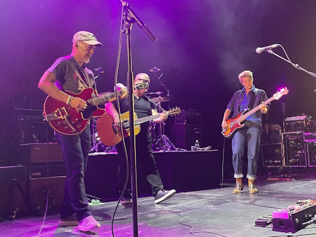
The Smashing Pumpkins
Wembley Arena, London 16/10/2018
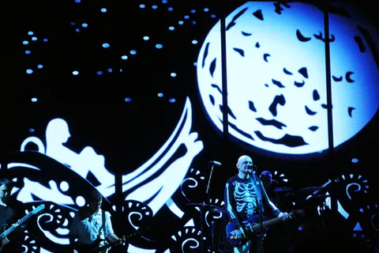
Hollywood Vampires
Genting Arena, Birmingham 16/06/2018
The Hollywood Vampires - part supergroup, part covers band, comprising Alice Cooper, Aerosmith’s Joe Perry, and some actor called Johnny Depp - make Birmingham the opening night of their first ever UK tour. The Hollywood Vampires started out as a rock star drinking club, formed upstairs at the Rainbow Bar and Grill on Hollywood’s Sunset Strip in the 1970s. The requirement to join? Outdrink everyone else and stay standing. Cooper of course is one of the original and lasting members (although he swapped alcohol for golf many years ago), and tonight is a tribute to those fallen friends. As Cooper announces as the Vampires stroll onto stage "we are the Hollywood Vampires - we sing for our dead, drunk friends"... (more)
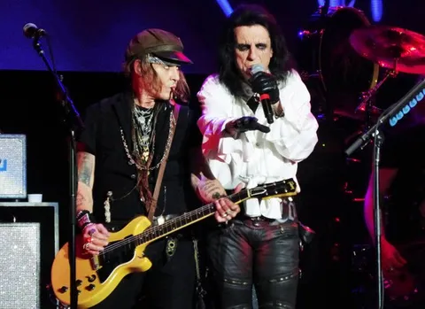
Ride For Ronnie
Los Encinos State Historic Park, CA 06/05/2018
Today marks the 4th annual Ride For Ronnie event - a bike ride starts off the day from Harley Davidson in Glendale, and ends down in Los Encinos State Historic Park with food, drinks and bands. The event raises awareness and funds for the Stand Up and Shout Cancer Fund, set up in memory of the late, great, Ronnie James Dio by his wife Wendy Dio... (more)
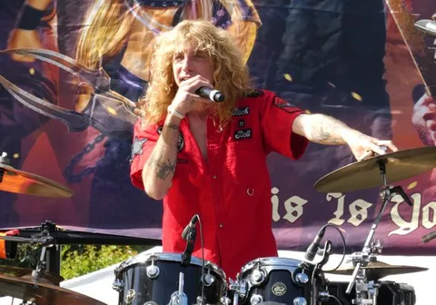
King's X
Whisky A Go Go, Hollywood, CA 25/04/2018
I first heard of King's X the best part of 20 years ago, after vocalist/bassist Doug Pinnick provided backing vocals on Lines In The Sand, one of the standout tracks from Dream Theater's 1997 album Falling Into Infinity. Back in the late '90s, with online music still in its infancy and King's X's albums not exactly freely available at my local HMV or Our Price, it wasn't until several years later that I actually consciously heard the band, when a colleague at the time lent me their Gretchen Goes To Nebraska
album. Since then, I've picked up as many of their albums as I could, and become familiar with their back catalogue, which is obviously a lot easier these days with music streaming services... (more)
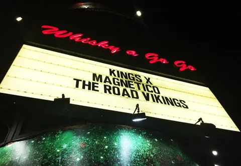
Paul Draper
SWX, Bristol 21/02/2018
I was never a big fan of Britpop in the 90s, being much more into grunge, metal and what at the time was desperately uncool - progressive rock (what do you mean, it’s still uncool?!). Nothing many British bands were doing at the time interested me at all - Radiohead were pretty good, and I loved the Wildhearts (still do) - but the whole Britpop scene totally passed me by. Most of the music press back in 1996 seemed content to lump Mansun in with this genre, which baffled me at the time, and still does retrospectively. The only thing they had in common with other Britpop bands was the "Brit" part, nothing about their music was remotely similar to anything else going on at the time... (more)
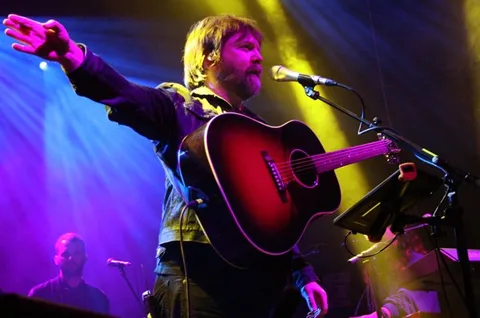
Brian Fallon
O2 Institute, Birmingham 20/02/2018
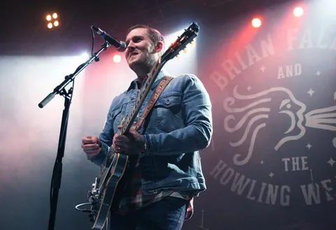
Mastodon
Civic Hall, Wolverhampton 04/12/2017
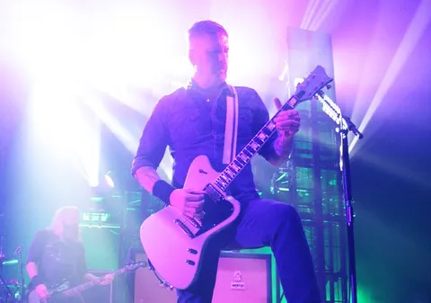
Little Steven and The Disciples of Soul
O2 Academy, Birmingham 10/11/2017
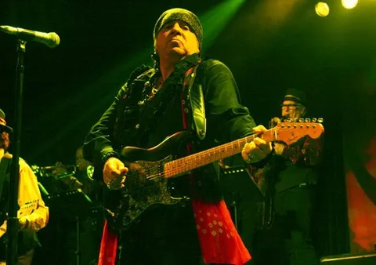
The Iron Maidens
The Assembly, Leamington Spa 27/10/2017
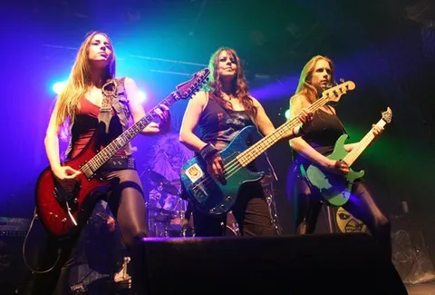
Jared James Nichols
Town Hall, Birmingham 27/07/2017

Monster Magnet
O2 Academy 2, Birmingham 21/05/2017
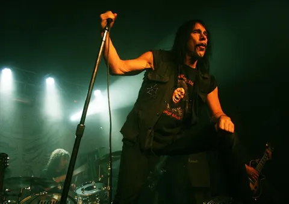
Lita Ford
O2 Academy, Islington 12/03/2017
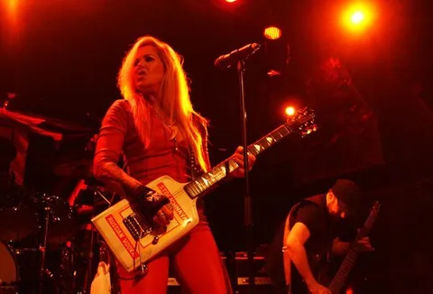